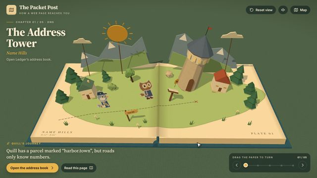
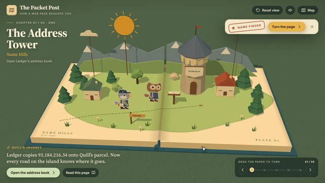
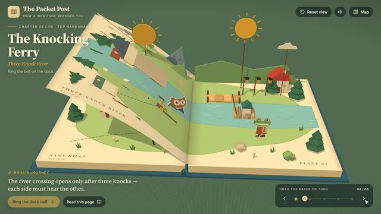
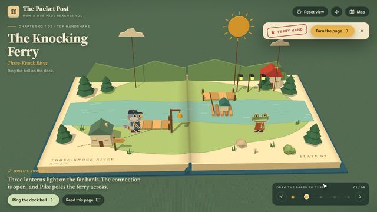
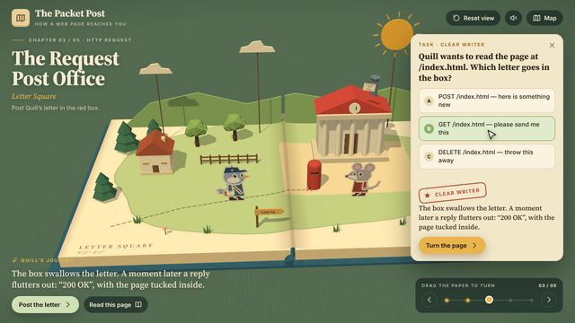
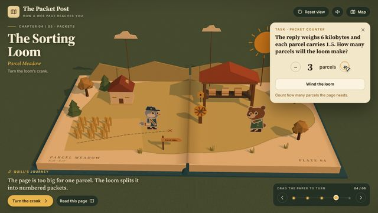
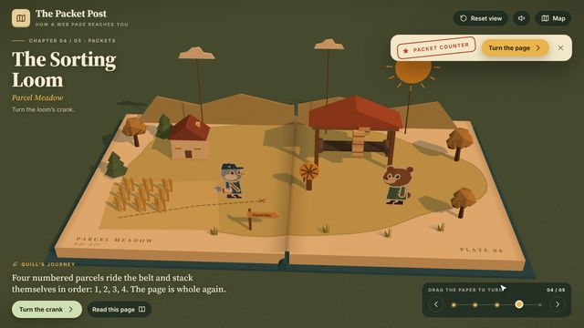
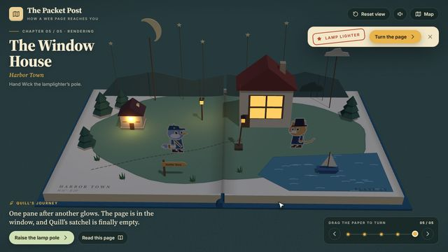
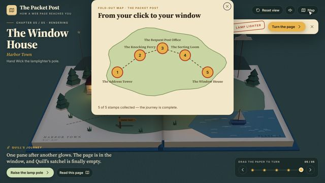

작업 흐름
- 입력
- 주제 하나 (과정 · 순서 · 수업 · 온보딩 · 동화)
- 브리프
- 여정의 심부름, 장마다 장소 · 생각 · 하늘 · 소품 · 과제, 주제에 맞춘 캐스트와 무게
- 설계
- 장마다 판지 세트와 소품의 움직임, 종이 인형 캐스트 시트, 인쇄된 땅
- 검사
- 접힘 · 거터 · 소품 가시성 · 관절 한계 · 발 미끄러짐 · 대기 동작 · 예비 동작 · 글 맞춤 · 결정성
- 출력
- 책 한 권짜리 웹 페이지 (
index.html+book.js), 스틸, 1920×1080 MP4
cp -r pop-up-quest /tmp/try && cd /tmp/try
python3 -m http.server 8000 # http://localhost:8000/examples/packet-post/ (?tour 로 필름 재생)
node scripts/check.mjs examples/packet-post/index.html
node scripts/new-book.mjs my-book --title "The Seed Post" --chapters "Frost Gate,Root Cellar,Sun Ledge" --hero rabbit요구 사항: WebGL 브라우저, 검사와 렌더에는 Node 18+ · Playwright + Chromium · ffmpeg. 단계별 순서는 SKILL.md에 있습니다.
샘플
예제 책 두 권의 투어에서 뽑은 장면과 캐스트 시트입니다. 둘 다 원본에 없던 주제로, 브리프부터 새로 설계했습니다. 카드를 누르면 그 책의 라이브 페이지가 열립니다.
The Packet Post 5장 · 46초 투어
웹 페이지가 클릭에서 창까지 오는 길: 비둘기 집배원 Quill이 요청 하나를 들고 섬을 건넙니다.

1장 · 펼침세트가 일어선다책이 열리며 납작했던 판지 조각이 경첩을 축으로 섬

1장 · DNS · 선택The Address Tower주소록을 눌러 풀면 탑에 IP 현수막이 풀림

넘김책장이 넘어간다떠나는 조각은 책장에 접히고, 다음 세트는 아래 페이지에서 일어섬

2장 · TCP · 순서The Knocking Ferry노크 세 번을 순서대로 놓으면 등불이 켜지고 뗏목이 건넘

3장 · HTTP · 선택The Request Post OfficeGET 편지를 넣으면 200 OK 답장이 날아옴

4장 · 패킷 · 개수The Sorting Loom6 KB ÷ 1.5 KB, 소포 개수를 세는 과제

4장 · 풀림소포가 순서대로 쌓인다벨트를 타던 소포가 번호 순으로 쌓임

5장 · 렌더링 · 순서The Window House파싱 · 스타일 · 레이아웃 · 페인트 순으로 창이 켜짐

끝 · 지도도장 다섯 개투어는 접이식 지도로 끝남
The Long Way Down 4장 · 38초 투어
물의 순환: 노란 비옷의 빗방울 Drizzle이 바다에서 구름, 눈, 강을 거쳐 돌아옵니다. 빗방울과 왜가리는 이 책을 위해 새로 만든 종입니다.
캐스트 시트 오른쪽 · 왼쪽 · 뒤 · 걸음 · 회전 · 모음 · 뜀 · 가리킴
장면을 쓰기 전에 몸을 채점하는 한 장. 먼 눈이 더 좁고, 가까운 팔 · 신발 · 가방은 등 쪽에, 뒷면은 판지 뒷면입니다.
실제 작품
이 스킬은 John Lindquist의 X 게시물(Astra와 pvncher의 "svg + 3d design" 스킬로 만든 팝업북 「The Folded Atlas」, 35초 화면 녹화)과 그 라이브 페이지를 보고 스타일만 가져와 이 레포에서 새로 지었습니다. 엔진 · 종이 인형 · 세트 · 책은 모두 새 코드이고, 예제 두 권은 원본에 없던 주제입니다.
링크
- SKILL.md 워크플로
- 폴더 kit · scripts · references · examples
- README.md 빠른 시작
- references/BRIEF.md 브리프 틀과 스틸 검토 기준
- references/BOOK.md 책 데이터 · 세트 빌더 · 좌표
- references/CAST.md 종이 인형 · 몸 규칙 · 움직임 타이밍
- references/LESSONS.md 겪은 문제와 해결